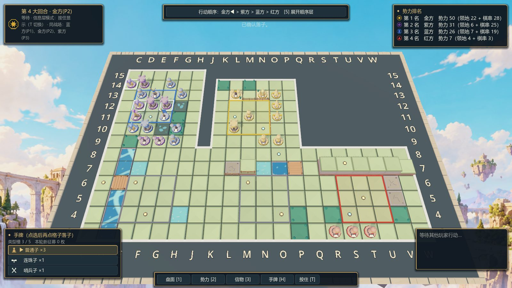
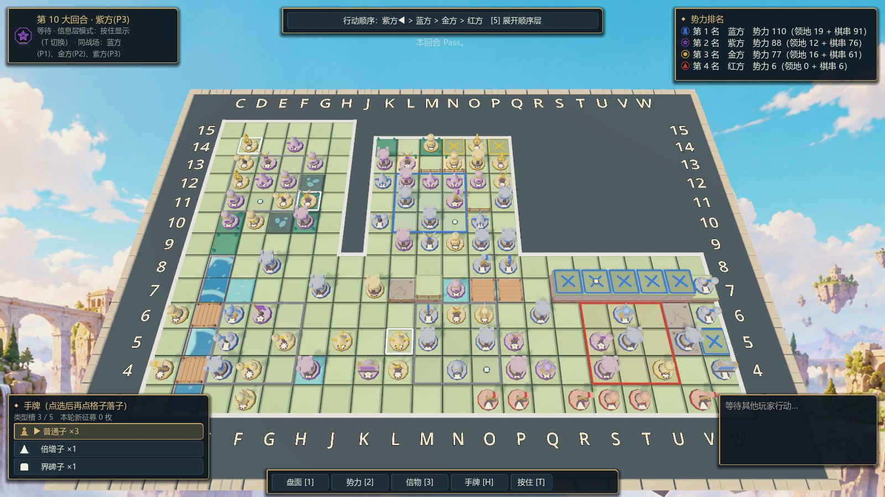
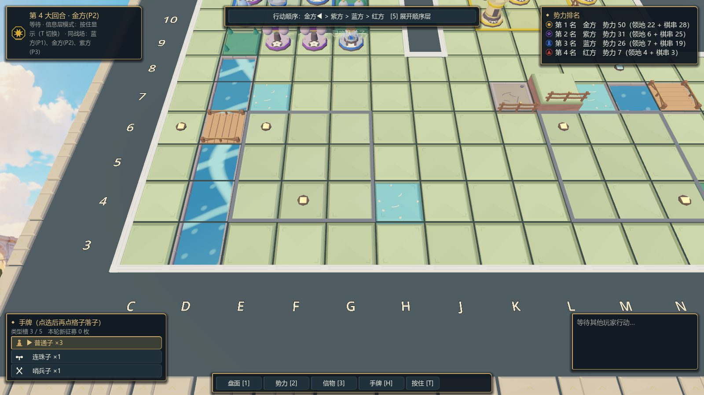
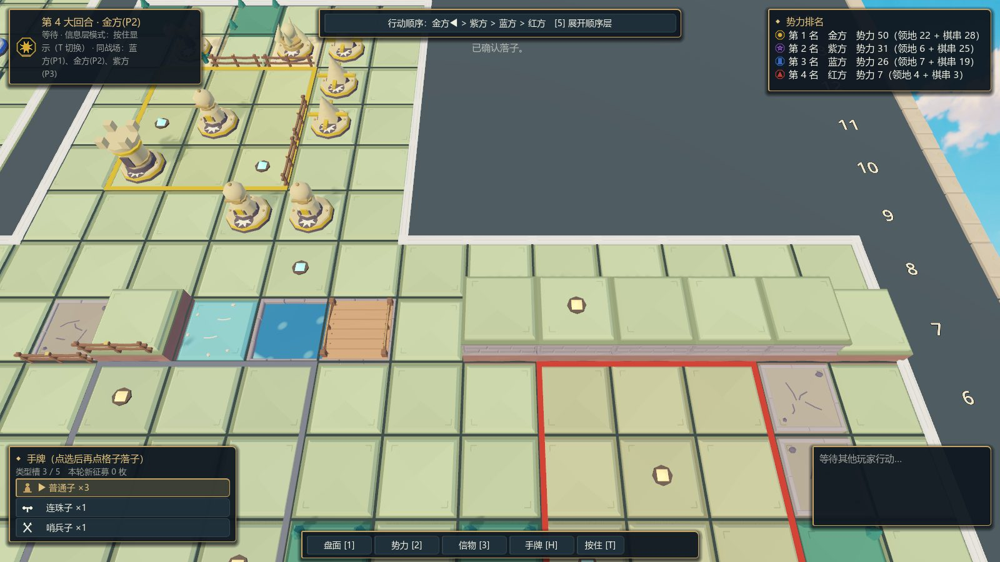
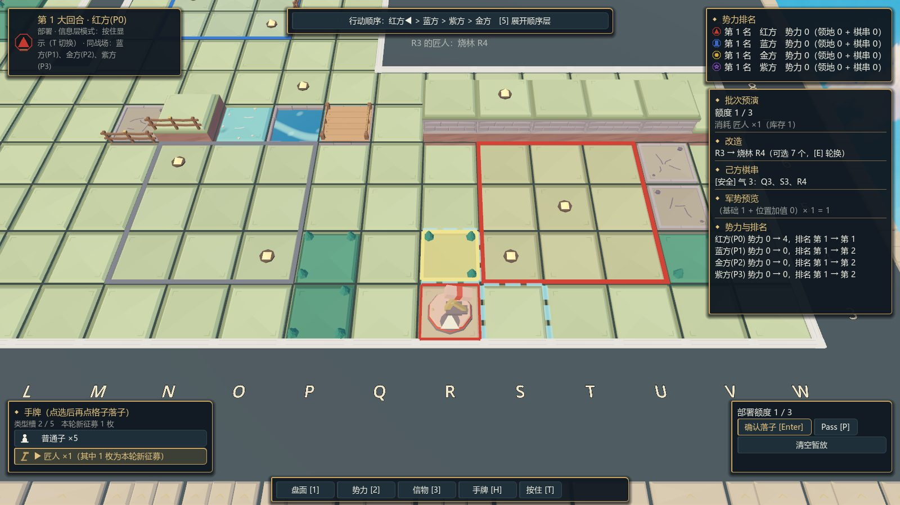
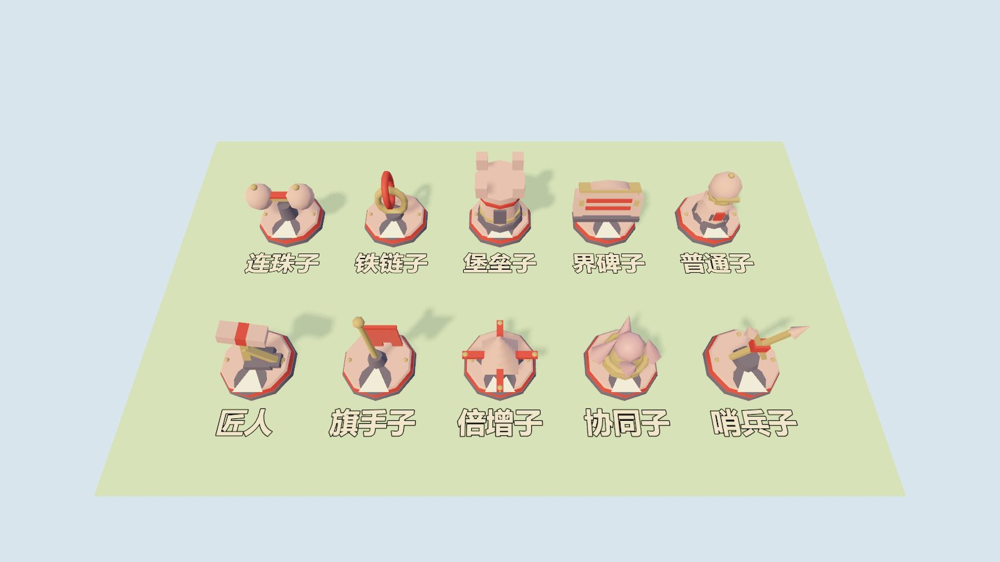

围杀 Siege回合制策略构筑 · 原型
四方各选一块主题棋盘，五块棋盘拼成一张图。前三个大回合只在自己的棋盘上筑阵，第四个大回合起全图开放：像围棋一样围住对手的棋串把它提走，抢地块、找信物，把“加值 × 倍率”滚成势力。
当前版本 v0.5.0 开放地图版·美术版（2026-10-23，预发布）。单机人机对局，1 名玩家对 3 个 AI；免安装，解压即玩。macOS 版暂未提供。首次打开的系统提示见下载与安装。

怎么玩
一局 4 人：你和 3 个 AI。没有固定轮数，整轮所有人都 Pass、棋盘填满或只剩一人时按势力排名；最迟第 100 大回合强制结算。胜负应当能用落点、排布和取舍来解释，而不是刷新运气。
- 盲选棋盘五块棋盘各有主题：高台、河流、林地、栅栏阵、混合。插旗即锁定，可以和别人选同一块。
- 筑阵三回合第 1–3 大回合只能在自己的棋盘落子与改造，全图都看得见。
- 全图交战第 4 大回合起任何空格都能落，越过接缝去围别人。
- 征募与批次每回合从展示的候选里挑棋子；一次暂放多枚，看完预演再整批确认。
- 势力与先手独占空格算领地，加上棋串军势就是势力；排名高的下一大回合先行动。
围棋式围杀
相连的己方棋子组成棋串、共享气。气被堵死，整串被提走；自杀手、同形与破坏活形的落点会事先打叉。
加值 × 倍率
十种棋子各有分工：堡垒子加值，倍增子让整串军势按倍率放大，连珠子、协同子、旗手子等看排布与地形加值。
会改变规则的地形
三档高度（崖壁断气、居高临下）、深水与桥、林地、栅栏，以及荒漠、沼泽、岩台、浅滩。河流与山脊会横穿棋盘只留一个通道。匠人落子时还能搭桥、立栅、烧林。
看得见的判读
盘面、势力、信物、顺序四个信息层随时切换；每次落子前都有预演，告诉你会提走什么、势力怎么变。
截图
全部是 v0.5.0 游戏内实拍。棋盘、地形与棋子是引擎里的低多边形模型，背后是一张宽幅浮岛天空图。





下载与安装
这是原型版本，没有购买开发者证书，所以第一次打开时 Windows 会拦一下。下面是放行的办法。
Windows
Siege-windows-x64-v0.5.0.zipWindows 10 / 11，64 位 · v0.5.0- 解压整个文件夹（
Siege.exe、Siege.pck和data_Siege.Godot_windows_x86_64要放在一起，别只拿出 exe）。 - 运行
Siege.exe。 - 出现“Windows 已保护你的电脑”时：点“更多信息”→“仍要运行”。
SHA256：682067048344607D02D9F872A5E0FD182F07F5677D3FE8F9DAFB0445BC0F88D1
macOS
v0.5.0 暂未提供 macOS 版。旧的 v0.3.0 有 macOS 包，但那是另一条开发线、规则不同，见全部版本。
显卡需要支持 Vulkan。不需要另装 .NET，运行时已经打在包里。遇到问题请到 Issues 反馈。
操作
启动后先进新局界面：显示一张随机地图（link: 加地图种子），可以输入种子、换一张、选 AI 难度，再开始。
| 做什么 | 怎么做 |
|---|---|
| 开局 | 点 5 块棋盘之一插旗（选中即锁定）→ 进入征募 |
| 落子 | 手牌选棋子类型 → 点格子暂放 → 看预演 → Enter 整批确认 |
| 跳过 | P Pass |
| 信息层 | 1 盘面 2 势力 3 信物 4 顺序；Tab 切换盘面读法；T 切换按住 / 点击显示 |
| 手牌 | H 打开手牌面板；V 收起征募面板 |
| 匠人 | E 轮换地形改造目标（搭桥 / 立栅 / 烧林） |
| 视角 | 方向键或 WASD 平移，M 全局预览，空格 回到自己的棋盘 |
| 返回 | Esc |
从源码运行
需要 Godot 4.7.2 .NET 版与 .NET 8 SDK。规则内核是纯 C#，不依赖引擎，自带测试。开放地图版在 link-mode 分支。
git clone -b link-mode https://github.com/Skysolderone/geme_demo.git
cd geme_demo
dotnet build src/godot/Siege.Godot.csproj
godot --path src/godot # 进新局界面
godot --path src/godot -- --map=link:12345 # 直接开一张指定种子的地图更新记录
v0.5.0 开放地图版·美术版
- 浮空国度美术基础版：全新宽幅浮岛天空；砂岩与苔绿棋盘、青碧水系，棋盘、边缘、河流、桥、树、岩、遗迹、栅栏、浮岛全部换新。基线标识为
art-base-v1，供后续美术版本对照。 - 棋子：十种棋子都有独立的低多边形石雕造型，按阵营着色。
- 界面：石墨蓝面板、旧金边框、阵营徽记与十种手牌轮廓图标；暂放棋子用发光轮廓，落点单独高亮。
- 规则、地图生成与 AI 与 v0.4.0 相同。
v0.4.0 开放地图版
- 开放地图：5 块主题出生棋盘建局时拼成一整张图（3+2 两行）；第 1–3 大回合只能在自己锁定的棋盘落子与改造，第 4 大回合起全图可落；插旗锁定后全图可见。
- 终局：整轮 Pass、棋盘填满或只剩一人即按势力排名；第 100 大回合作为安全网强制结算。
- 地形：出生棋盘边长 6–7；河流 / 山脊横穿棋盘只留一个通道，另有湖泊与岩区；荒漠、沼泽、岩台、浅滩按主题投放。
- 活形：栅栏不再参与眼的判定。
- AI：循环提子时主动停手；会落“单看每枚不划算、合起来划算”的组合；会为打通路线搭桥；专家构筑期不前瞻。
- 画面：地砖倒角与侧面分层、河岸石沿、重建的桥与栅栏、新地表点缀、外框与浮岛底座。
- v0.4.0 来自另一条开发线，没有 v0.2.0–v0.3.0 的阵型、镜头跟随、军势逐步揭示与对手回合摘要；暂无 macOS 包。
v0.1.0–v0.3.0
- 早期的共享棋盘版本（另一条开发线），提供 macOS 与 Windows 包；新增过阵型、军势逐步揭示、镜头跟随与对手回合摘要。下载见全部版本。